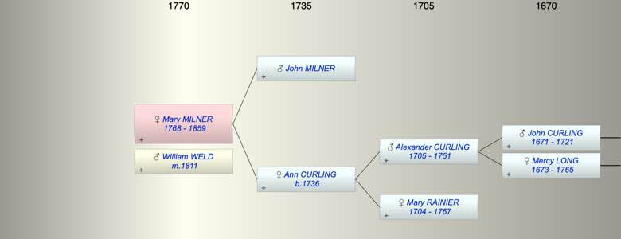

| [Index] |
| Mary Rainier MILNER (1768 - 1859) |
|  |
| b. 1768 at Wapping |
| m. 14 Nov 1811 WIlliam WELD at Romford, Essex |
| d. 1859 aged 91 |
| Parents: |
| John MILNER |
| Ann CURLING (1736 - ) |
| Events in Mary Rainier MILNER (1768 - 1859)'s life | |||||
| Date | Age | Event | Place | Notes | Src |
| 1768 | Mary Rainier MILNER was born | Wapping | Note 1 | ||
| 14 Nov 1811 | 43 | Married WIlliam WELD | Romford, Essex | Note 2 | |
| 1859 | 91 | Mary Rainier MILNER died | |||
| Note 1: bap St John Wapping 11 Sep 1768 |
| Note 2: St Edward the Confessor, Romford |
| Created on a Mac™ using iFamily for Mac™ on 8 Oct 2023 |